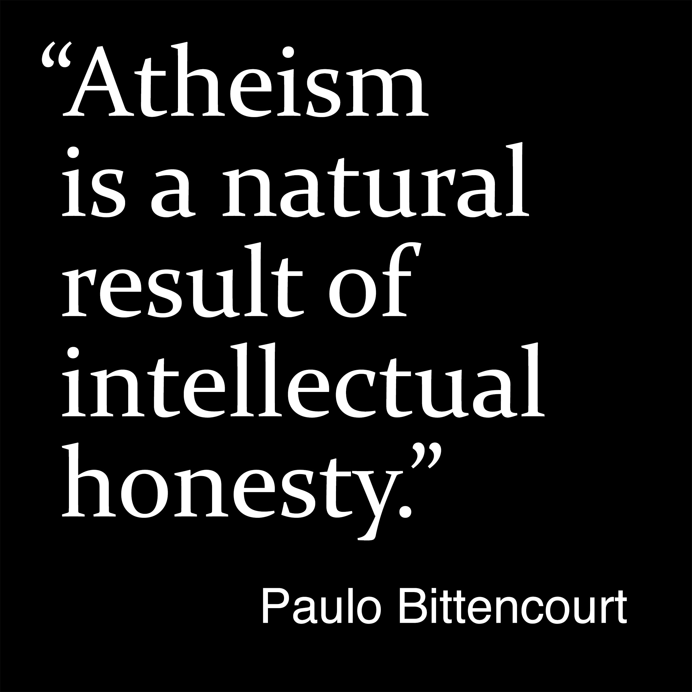

Thoughts and Quotations
Quotes by Paulo Bittencourt (5/6)
Books Liberated from Religion and Wasting Time on God
29
“If your religion doesn’t make you be good, something is wrong with it, and if you need religion to be good, something is wrong with you.”
30
“Those who are not satisfied with anything less than being 100% intellectually honest are atheists, because Atheism is the only stance free of incoherences and contradictions.”
31
“Atheism is a natural result of intellectual honesty.”
32
“It doesn’t take disaster, tragedy or catastrophe to make you feel that God doesn’t exist. Biting your tongue, hitting your shin or falling on your butt is more than enough.”
33
“Galaxy collisions, supernovae, black holes, gamma-ray bursts, neutron stars, inhospitable planets, comets, asteroids, meteorites, volcanoes, earthquakes, tsunamis, cyclones and Evolution are incontestable evidence that the Universe is not the project of any designer, unless the project was to start and abandon it to its own devices.”
34
“To say ‘God exists’ is evidence that God doesn’t exist. If God existed, his existence would be so obvious that there would be no need to say ‘God exists’.”
35
“If God exists, it’s not the human being who has to feel bad for not believing, but God for giving the human being reasons not to believe.”
36
“The Bible is so evil that the Koran is based on it.”
What do you think?
ES • PT • DE